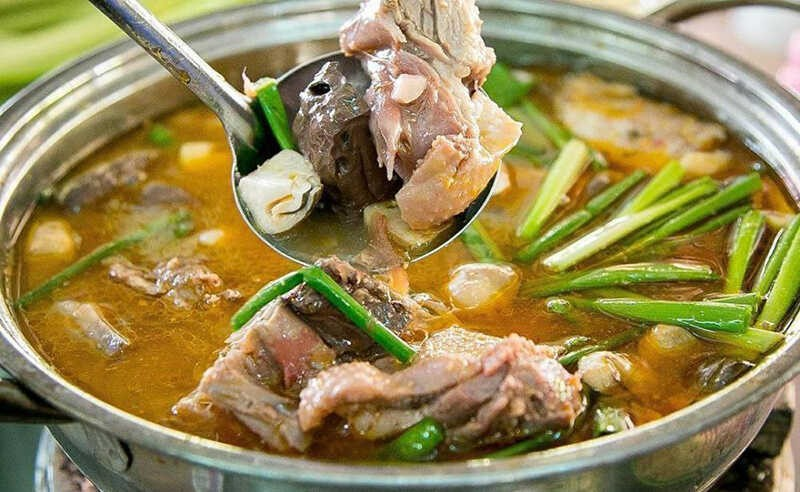
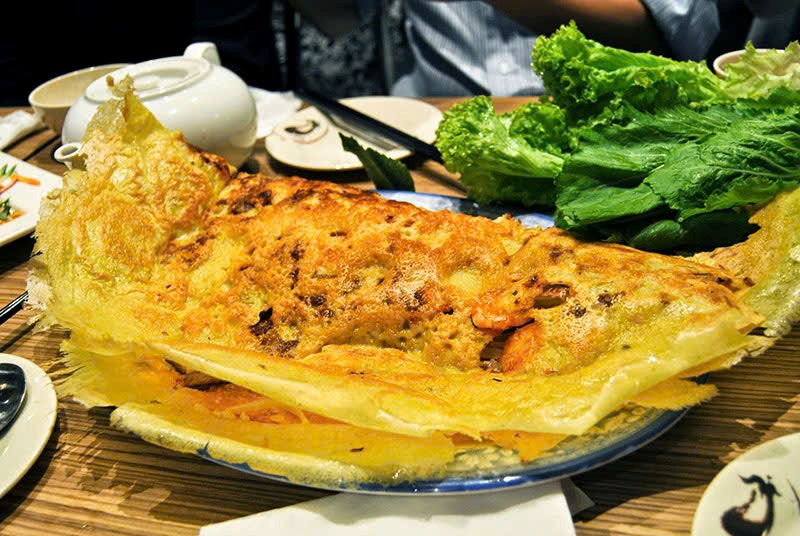
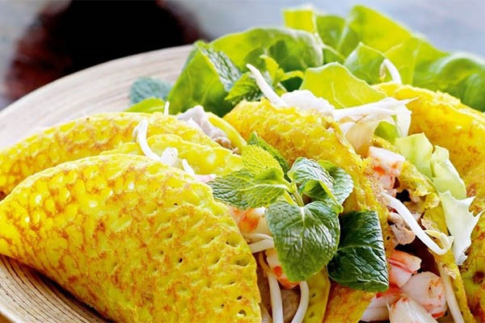
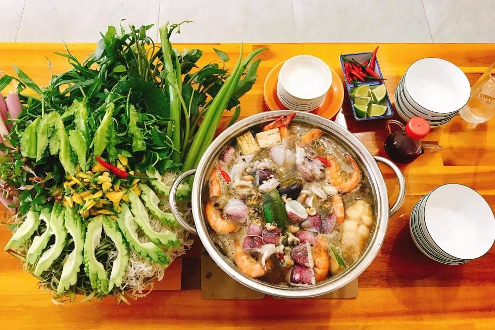
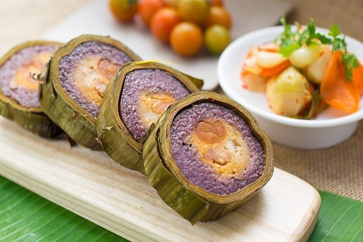

Lẩu Vịt Nấu Chao Thành Giao

Đây không chỉ là một quán ăn mà còn là một "điểm check-in" huyền thoại.
Hương vị chi tiết: Chao ở đây được ủ kỹ nên có độ béo ngậy, thơm nồng nhưng không quá gắt. Thịt vịt là vịt xiêm nên thịt chắc, ít mỡ, được tẩm ướp thấm đẫm gia vị trước khi nấu. Khi nước lẩu sôi, vị ngọt của thịt vịt quyện với vị bùi của khoai môn tạo nên một loại nước dùng sền sệt, chấm cùng bún tươi là "hết sảy".
Địa chỉ: Hẻm 1/8 Đường Lý Tự Trọng, Phường An Phú, Quận Ninh Kiều, Cần Thơ.
Bánh Xèo Bảy Tới

Đây không chỉ là một quán ăn mà còn là một "điểm check-in" huyền thoại.
Hương vị chi tiết: Chao ở đây được ủ kỹ nên có độ béo ngậy, thơm nồng nhưng không quá gắt. Thịt vịt là vịt xiêm nên thịt chắc, ít mỡ, được tẩm ướp thấm đẫm gia vị trước khi nấu. Khi nước lẩu sôi, vị ngọt của thịt vịt quyện với vị bùi của khoai môn tạo nên một loại nước dùng sền sệt, chấm cùng bún tươi là "hết sảy".
Địa chỉ: Hẻm 1/8 Đường Lý Tự Trọng, Phường An Phú, Quận Ninh Kiều, Cần Thơ.
Lẩu Mắm Dạ Lý
Nếu muốn tìm một không gian sang trọng hơn một chút nhưng vẫn giữ chất local, hãy đến đây.
Hương vị chi tiết: Nước lẩu ở đây là sự cân bằng tuyệt vời. Nó không quá mặn như mắm sống mà có vị ngọt từ xương heo và cá cánh. Khi ăn, bạn sẽ nhúng cá hú, tôm, mực, chả cá vào. Điểm nhấn là "rừng rau": từ bông súng dài ngoằng, bông điên điển vàng rực đến rau nhút giòn rụm. Mỗi loại rau mang một vị chát, ngọt, đắng riêng, hòa quyện trong nước mắm tạo nên một "bản giao hưởng" vị giác.
Địa chỉ: 89 Đường Trần Hoàng Na, Phường Hưng Lợi, Quận Ninh Kiều, Cần Thơ.
Bánh xèo Cần Thơ

Nhắc đến Cần Thơ, không thể bỏ qua bánh xèo miền Tây. Bánh có kích thước lớn, vỏ vàng giòn nhờ pha nước cốt dừa, nhân gồm tôm, thịt ba rọi, giá đỗ và đôi khi có củ hủ dừa. Tên “xèo” bắt nguồn từ âm thanh khi đổ bột vào chảo nóng. Du khách có thể thưởng thức tại quán Bánh Xèo 7 Tới (quận Cái Răng), nổi tiếng lâu năm với hương vị đậm đà.
Lẩu mắm Cần Thơ

Lẩu mắm là món ăn đặc trưng của miền sông nước Nam Bộ. Nước lẩu được nấu từ mắm cá linh hoặc cá sặc, tạo hương vị đậm và thơm đặc trưng. Món ăn ăn kèm nhiều loại rau dân dã như bông súng, rau nhút, kèo nèo. Ở Cần Thơ, nhiều nhà hàng khu vực Bến Ninh Kiều phục vụ món này, thu hút cả người dân địa phương lẫn khách du lịch.
Bánh tét lá cẩm

Bánh tét lá cẩm là đặc sản độc đáo của Cần Thơ với màu tím tự nhiên từ lá cẩm. Bánh có nhân đậu xanh, thịt mỡ và trứng muối, vị dẻo thơm và đẹp mắt. Món này xuất hiện nhiều vào dịp Tết và được bán tại các lò bánh gia truyền ở quận Bình Thủy.